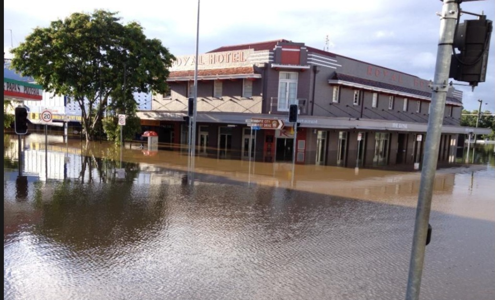
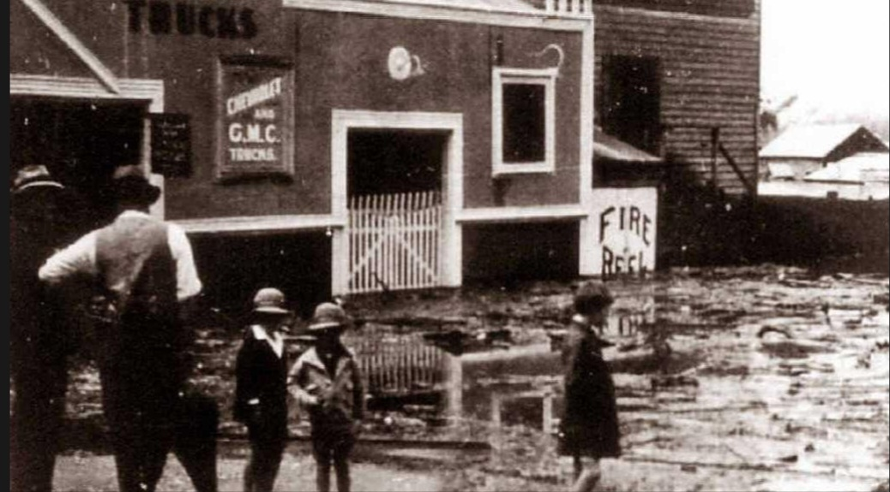
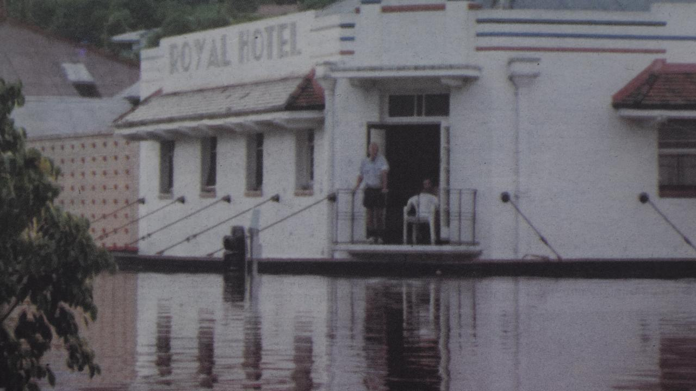
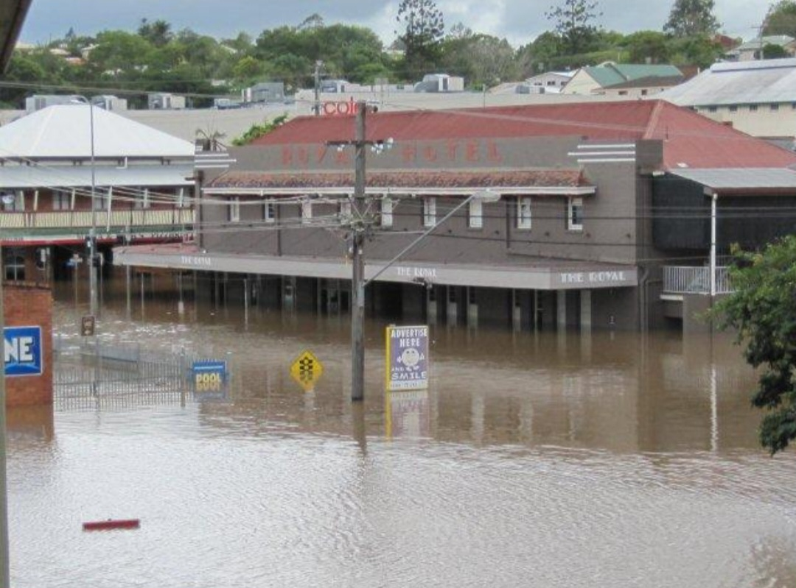

Our Story
For more than 140 years, the corner of Mary and Monkland Streets has been the beating heart of Gympie's social scene.
From gold-rush theatre to a Gympie institution
The story began in 1868. Originally built as the Exchange Hotel and Varieties Theatre, the site quickly became a magnet for entertainment and hospitality. By 1887 it boasted a theatre and dancing room, hosting everything from travelling performers to spirited community dances — a symbol of Gympie's booming gold-rush era where miners, merchants, and musicians mingled under one roof.
Nature had other plans. A cyclone tore through the town in 1875, and devastating floods submerged much of Gympie that same year. But the spirit of the Exchange endured: rebuilt and reopened as the Varieties Hotel and Theatre, it once again drew good crowds.


The Royal Hotel and the Theatre Royal
In 1885 the establishment was renamed the Royal Hotel, and by 1910 its entertainment wing had evolved into the Theatre Royal. The venue became a cultural cornerstone, hosting plays, concerts, and community events that shaped the town's identity — a place where laughter echoed off the walls and applause rang out beneath the chandeliers.
Tragedy struck in 1935 when fire razed the building to the ground. But even this could not extinguish the Royal's legacy.
An Art Deco icon on the corner
In 1938, Bulimba Brewery purchased the site and constructed a new hotel — this time with a striking Art Deco facade that still graces the corner today. Sleek lines, geometric motifs, and bold design choices gave the Royal a fresh identity that honoured its past while embracing the future.
Over the decades, floodwaters have swept through its halls more than once, leaving behind mud and memories. Yet each time, the Royal has cleaned up, reopened its doors, and welcomed the community back — a symbol of Gympie's resilience, a place that bends but never breaks.

Bending, never breaking
Gympie and the Royal have weathered the water together for generations — and always reopened.



Heritage charm, modern comfort
Following a significant refurbishment in recent years, the Royal now offers comfortable and affordable accommodation that blends heritage character with modern convenience. On-site managers Gary and Joanne Churchill look after guests day to day.
While the bar and entertainment areas are no longer open to the public daily, they are available for private bookings by appointment — perfect for functions, conferences, and special gatherings. The Royal remains a place where stories are shared, memories are made, and history lives on.